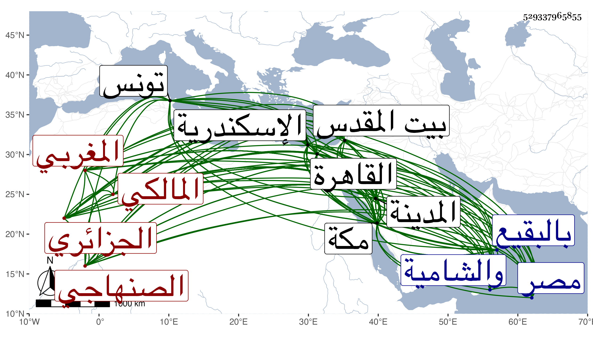

0902Sakhawi.DawLamic.ITO20230111-ara1.EIS1600.529337965855
Biography ID: 529337965855
770
خليل بن هرون بن مهدي بن عيسى بن محمد أبو الخير الصنهاجي الجزائري المغربي المالكي نزيل مكة . اشتغل ببلاد الغرب بالعربية وغيرها ، ولقي هناك جمعا من العلماء والصلحاء فحفظ عنهم وعمن لقيه بالديار المصرية والشامية والحجازية أخبارا حسنة من حكايات الصالحين ، وانقطع بمكة نحو عشرين سنة وتزوج بها زينب ابنة اليافعي ، وقرأ بمكة الكثير على ابن صديق والزين المراغي والقاضي على النويري والشريف عبد الرحمن الفاسي وأبي اليمن الطبري وغيرهم وبالمدينة على إبراهيم بن فرحون وسليمان السقا وجماعة وببيت المقدس على أبي الخير بن العلائي والشيخ محمد بن أحمد بن محمد القرمي ، وعلي بن محمد بن أحمد البعلي وإبراهيم ومحمد ابني إسماعيل القلقشندي وطائفة بالقاهرة على السراج البلقيني وباسكندرية على عبد الله بن أبي بكر الدماميني ومحمد بن يوسف بن أحمد السلار ، وكان قد قرأ بتونس على ابن عرفة ، وأجاز له خلائق وخرج له رفيقه الجمال بن موسى فهرستا لبعض مسموعاته والتقط هو ما في الكتب من الأحاديث القدسية وجمع كتابا في الاذكار والدعوات سماه تذكرة الأعداد لهول يوم المعاد وهو كتاب جليل حسن كثير الفوائد واختصره . وذكره شيخنا في معجمه باختصار جدا فقال اشتغل بالعلم وقرأ الحديث لقيته بمكة قديما وسمعت من فوائده انتهى . وأغفله الفاسي من تاريخ مكة وبيض له المقريزي في عقوده فاستدركه ابن فهد على أولهما . ومات في ثامن رمضان سنة ست وعشرين بالمدينة النبوية ودفن بالبقيع وقد قارب الستين .
